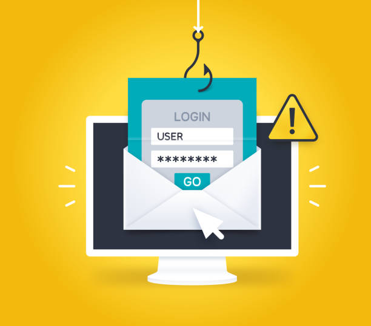

Les arnaques ne visent pas que les entreprises. Chaque semaine, des habitants du nord Finistère reçoivent des appels, SMS ou messages piégés. Voici les plus courantes et les réflexes qui protègent.
Le faux conseiller bancaire
Un appel affiche le numéro de votre banque. La personne parle d'une opération suspecte et vous demande un code reçu par SMS, de valider une opération ou de remettre votre carte à un coursier.
- Votre banque ne demande jamais un code reçu par SMS, ni vos mots de passe.
- Elle n'envoie pas de coursier et ne demande pas de virement vers un compte « sécurisé ».
- Au moindre doute, raccrochez et rappelez votre agence au numéro habituel.
Les SMS et emails piégés
Colis en attente, amende à payer, carte Vitale à renouveler, remboursement en attente : le message contient un lien vers un faux site qui récupère vos coordonnées bancaires.
- Ne cliquez pas : allez directement sur le site officiel en tapant son adresse.
- Transférez les SMS suspects au 33700, le numéro de signalement gratuit.
Le faux support technique
Une page bloque votre écran avec une alarme et un numéro à appeler « pour débloquer votre ordinateur ». C'est une arnaque : Microsoft n'affiche jamais de numéro de cette façon.
- N'appelez pas le numéro et n'installez aucun logiciel demandé.
- Fermez le navigateur, ou redémarrez l'ordinateur s'il est bloqué.
Le compte WhatsApp ou Facebook piraté
Un « ami » vous demande de lui renvoyer un code à 6 chiffres reçu par SMS. Ce code sert en réalité à prendre le contrôle de votre compte.
- Ne transmettez jamais un code de vérification, même à un proche.
- Activez la double authentification sur WhatsApp, Facebook et votre messagerie.
Si vous êtes victime
- Faites opposition sur votre carte bancaire sans attendre.
- Changez les mots de passe concernés, en commençant par votre messagerie.
- Faites-vous aider sur 17cyber.gouv.fr, le service public d'assistance aux victimes.
- Appelez Info Escroqueries au 0 805 805 817 (gratuit) et déposez plainte en gardant toutes les preuves.
Besoin d'aide ?
Je peux sécuriser vos comptes, vérifier un ordinateur ou un téléphone, et j'anime des ateliers de sensibilisation pour les associations et clubs du secteur. Voir la page cybersécurité ou appelez le 06 41 53 73 34.
Un doute sur votre ordinateur ?
Intervention à domicile à Lannilis, Lesneven, Le Folgoët, Plouguerneau et dans tout le Pays des Abers. 30 €/h, déplacement inclus.